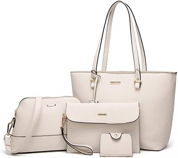
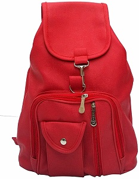

bag1
I just got my order, so haven't used them to shop yet, but the quality looks very good. The fabric seems strong but lightweight. The pocket to store them in is sewn to the bag and it's very easy to fold the bag and handles into it to store. I think I am going to love not having bulky reusable bags all over the car. These have long handles that could be used over your shoulder. I test-filled one bag with food from home to test it. I probably could have fit more inside, but then I wouldn't have been able to carry it. Once filled, it weighed in at 24 lbs. Pictures below of the bag filled and the food that I had put into it. These are going to be great!
bag2
After spending entirely too much time looking at grocery bags on here, I ended up choosing these. I've used them about 3 times now and overall pretty happy with them. They seem like they will hold up. They are a thicker fabric with a much thicker plastic piece for the bottom insert than you get from the reusable bags you purchase at a grocery store and the solid black color with no logo is nice.
My only complaints would be that the handles aren't long enough to put one over your shoulder and as others have mentioned, they are almost a little too wide as far as the side width/depth of the bag. Things don't seem to fit as snugly as they did with my standard reusable grocery bags from Publix that I'm replacing.

bag3
I never thought I'd be so excited about reusable grocery bags, but I freaking love these bags. They're durable and can hold a ton of groceries. On my major shopping trips I probably use about 5 bags and they're so much easier to carry, especially when you also have a little one to carry around too. Great for those of us who try to carry as many bags as possible in one trip! Super cute too.